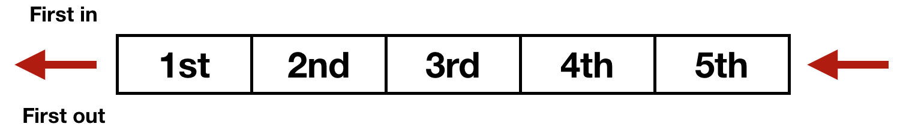
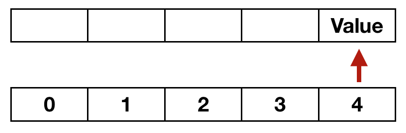
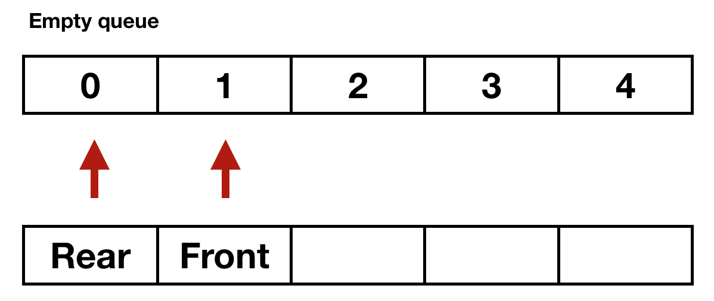

Queue
Queues are a type of container adaptor, specifically designed to operate in a FIFO context (first-in first-out), where elements are inserted into one end of the container and extracted from the other. Just think of it like the line at your local supermarket.

Terminilogy:
Enqueue: Go to the end of the line(Adding to the queue or popping).
Front: When you are first in line(Similar to Top()).
Dequeue: You are no longer in the line because you are no longer number 1(Similar to Pop()).
IsFull: Returns true if queue is full.
IsEmpty: Returns true if queue is empty.
Remember that unlike a stack, where the first element always has a zero index, in a queue, the first element may have an index larger than zero.
In the following diagram, we can see the single element of the array is being indexed at the subscript of 4.

When do the values of the front or the back variables change?
Variable
front is
incremented when you dequeue.
→ front++;Variable back or rear is also incremented when you enqueue. → back++;
Notice that these two variables are never decremented.
What happens when you reach the last index of the array?
Therefore,
the first element of a queue may have a larger than zero index. Indeed, if the last index (number of elements - 1) is occupied, that could be the only item in the queue, as opposed to a full queue.
front → Index of first item in the queue.
rear → Index of last item in the queue.
Items are removed from front to back in a circular or ring buffer manner.
rear going in a full circle
if(rear == MAX-1){
rear = 0;
} else {
rear++;
}
front going in a full circle
if(front == MAX-1){
front = 0;
} else {
front++;
}
However, another alternative would be:
rear = (rear+1) % MAX;
Why do you need an empty slot in a circular queue?
Normally if a queue only contains one item,
front and
rear would be at the same index; however, if we dequeue, then we will increment
front, thus
front will be one index greater than rear. If the item at index 0 was dequeue, then
front → 1 and
rear → 0; at this point our queue would be empty.

In order to figure out if the queue is full, the circular queue requires that one slot in the array will always be empty, even when the queue is full. Therefore, the size of the array must be one mora than the number of elements you need. Thus, if you want an array to hold information on up to 5 students, the number of elements must be 6.
Starting values of front and rear
The logical starting value for
front and
rear is
MAX-1, which is the last element.
When you add (enqueue) two elements to the queue, front is still MAX - 1, but rear is now 1. When you dequeue one item, front is now 0, and rear still is 1. This is correct, since front indicates the index of the array element before the front element of the queue (here 1), and rear indicates the index of the last element of the queue.
Empty vs. full
The queue is
empty when
front == rear, meaning that both will have the same index, the same as when they are initialized.
The queue is full when (rear+1) % MAX == front
Front function
The front function returns the value of the first item in the queue. Since
front does not indicate the index of the front of the queue, but instead the empty slot just before it, returning the value at the front of the queue, using the
Front function, similarly involves looking at the index “after” front, but without changing the value of front.
That index is then [(front+1)%MAX].Therefore, to return the item in front of the queue, one must return [(front+1)%MAX].
In our example, we got the proper output by returning data at the front index → return data[front]
Class member variables
Variables in the queue clases have two purposes, holding data and maintain the state of the queue. The variables that maintain the state are front and rear. The variable that holds the data will be an array of the type specified.
| Name |
Data Type |
Description |
front |
int |
Index "before" the first element of array that holds a value of the queue. |
rear |
int |
Index of last element of array that holds a value of the queue. |
data |
Same as array |
Holds values being placed on the queue. |
Class member functions
| Name |
Return Value |
Parameter |
Purpose |
| constructor |
none |
none |
Initializes front and rear. Optionally, you may also want to initialize the values of the data array to some default value. |
Enqueue() |
none |
Same data type as array |
Assigns the parameter (same data type as array) to the index following the existing rear element of the array and changes the rear variable. |
Dequeue() |
none |
none |
Changes the front variable. |
Front() |
Same data type as array |
none |
Returns the value (same data type as array) in the front index of array. |
IsEmpty() |
bool |
none |
Returns false (zero) if there is at least one item of the of the queue in array, true (non-zero) if not. |
IsFull() |
bool |
none |
Returns true (non-zero) if all elements of the array contain items of the queue, false (zero) if not. |
Queue example
#include <iostream>
#include "CQueue.h"
using namespace std;
int main(int argc, char *argv[]) {
CQueue cq;
char ans;
int choice;
cout << "Do you wish to see the queue menu " << endl;
cout << "Enter 'y' to continue: ";
cin >> ans;
string name;
cin.ignore();
while(ans == 'y'){
cout << endl << "CQueue Menu:" << endl;
cout << "(1) Check status of stack" << endl;
cout << "(2) Enqueue" << endl;
cout << "(3) Dequeue" << endl;
cout << "(4) Name in front of queue" << endl;
cout << "Enter choice: ";
cin >> choice;
switch (choice) {
case 1:
if(cq.IsEmpty()){
cout << "Queue is empty" << endl;
} else if(cq.IsFull()){
cout << "Queue is full" << endl;
} else {
cout << "Queue is partially filled" << endl;
}
break;
case 2:
cin.ignore();
cout << "Enter name: ";
getline(cin,name);
cq.Enqueue(name);
break;
case 3:
cq.Dequeue();
break;
case 4:
if(cq.IsEmpty()){
cout << "Queue is empty!!!" << endl;
} else {
cout << "Front in line: " << cq.Front() << endl;
}
break;
}
cout << endl << "Do you wish to see the stack menu " << endl;
cout << "Enter 'y' to continue: ";
cin >> ans;
cin.ignore();
}
return 0;
}
#ifndef _CQueue_h_
#define _CQueue_h_
#include <iostream>
#include <string>
using namespace std;
const int MAX = 4;
class CQueue {
private:
int front;
int rear;
string data[MAX];
public:
CQueue();
string Front();
bool IsEmpty();
bool IsFull();
void Enqueue(string);
void Dequeue();
};
#endif
#include "CQueue.h"
#include <iostream>
#include <string>
using namespace std;
void CQueue::Enqueue(string n){
if(!IsFull()){
data[rear] = n;
if(rear == MAX-1){
rear = 0;
} else {
rear++;
}
} else {
cout << "FULL! CANNOT ADD MORE NAMES!" << endl;
}
}
bool CQueue::IsEmpty(){
return front == rear;
}
string CQueue::Front(){
return data[front];
}
void CQueue::Dequeue(){
if(!IsEmpty()){
if(front == MAX-1){
front = 0;
} else {
front++;
}
} else {
cout << "ERROR! IT'S EMPTY" << endl;
}
}
bool CQueue::IsFull(){
return (rear+1)%MAX == front;
}
CQueue::CQueue() {
front = MAX-1;
rear = MAX-1;
for(int i=0; i<3; i++){
data[i] = "AVAILABLE";
}
}